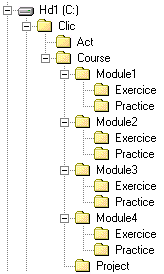

PrerequisitesTo carry out this course basic knowledge and skills in working with Windows and Internet. In particular, you should be familiar with operations such as: creating folders; copying files; changing file and folder names: installing programmes; compressing and decompressing with WinZip, navigating the web; sending and receiving e-mail; etc. Before starting this course, basic knowledge of creating and handling images and sound are necessary. This course has been programmed along with the common modules Elements of Multimedia Design, Digital Images and Digital Sound.
Course ObjectivesThe main objectives of the course are to: - Get to know the Clic 3.0 environment and its didactic possibilities. - Carry out activities in the various modules that the programme offers. - Integrate multimedia resources in didactic material. - Program sequences of organised activities in packs. - Edit and adapt existing materials to specific didactic requirements. - Familiarise the user with the workings of the reporting systems and progress monitoring of students.
Course StructureThe estimated time to complete the course is 60 hours. The course consists of 8 modules and a final project:
The first three modules, which are common to other PIE courses, are organised by a combination of guided practices with an explanation of the course content inserted. The last four modules are structured as follows: A. A main document where the module contents are explained. B. A combination of guided practices explained step by step. We recommended that the proposed order of exercises is followed as the exercises often use materials created in previous exercises. C. A proposal of exercises to carry out, which you have to do and then send to the course tutor by e-mail.
At the end of the course you will have to write a project consisting of an activity pack which you will also have to send to the course tutor in order to receive a pass for the course. Sending the exercisesBefore sending your materials, they should be compressed in ZIP format (using WinZip or a similar tool). The materials corresponding to each module's exercises have to be sent together, compressed in a single ZIP file and added to an email message to the course tutor. It is important to include the following information in the message: your name; email address; which module the exercises are from; and a brief description of the contents. Necessary programmesAlthough Clic also works with Windows 3.1, the materials for this course have been designed for a multimedia computer equipped with Windows 95, 98, NT o 2000. You should check that the sound card controllers are properly installed and that the speakers and microphone are connected and working properly. You will need the following programmes to do the exercises and the guided practices:
File OrganisationBefore starting the course you should prepare a set of folders to save the exercises files. Clic is usually installed in the C:\CLIC folder. In this folder you should create another called Course. Within Course you need to create five more folders called: Module1, Module2, Module3, Module4 and Project. Within each of the first four folders you need to create two more and call them Practice and Exercice. The final result should look like this:  There is a ZIP file at the start of each guided practice which contains the necessary materials to do it. The contents of these ZIP files should be decompressed in the corresponding "Practice" folder for each unit. There are also ZIP files for some of the exercises, which should be decompressed in the corresponding "Practice" folder for its module.
|